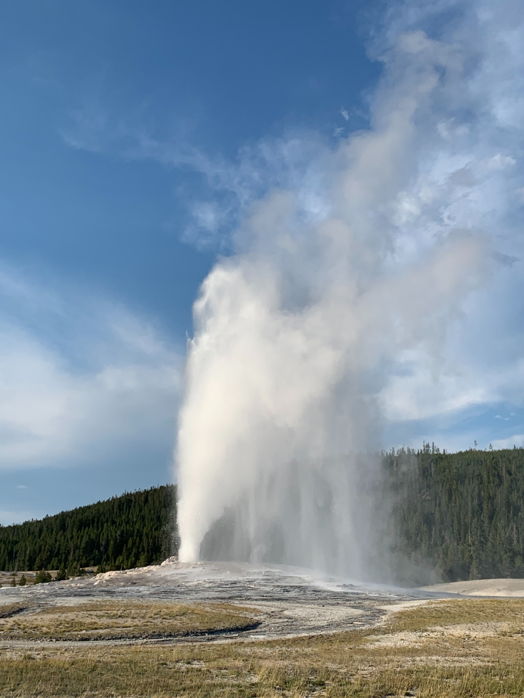
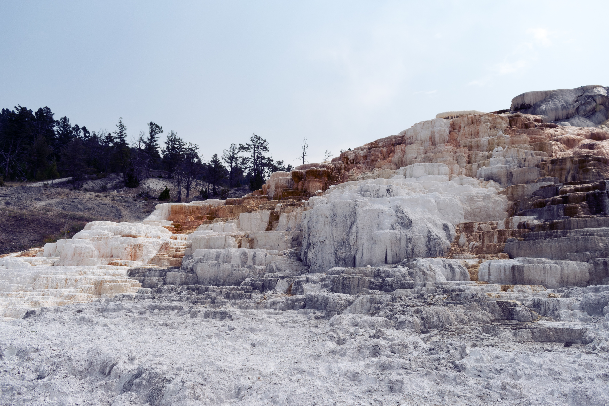

Yellowstone National Park Highlights

Yellowstone National Park is a vast and diverse area with a variety of natural wonders to explore. From its famous geysers and hot springs to its scenic hiking trails and wildlife viewing areas, there is no shortage of sites to see and activities to enjoy. Below are a just few of the most iconic sites at Yellowstone National Park. You can view the full National Park Service map to discover more of what Yellowstone National Park has to offer.
Grand Prismatic Spring

Old Faithful

Mammoth Hot Springs

Grand Canyon of the Yellowstone

Lamar Valley

Morning Glory Pool